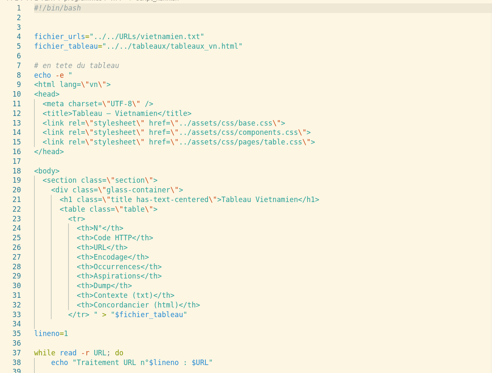
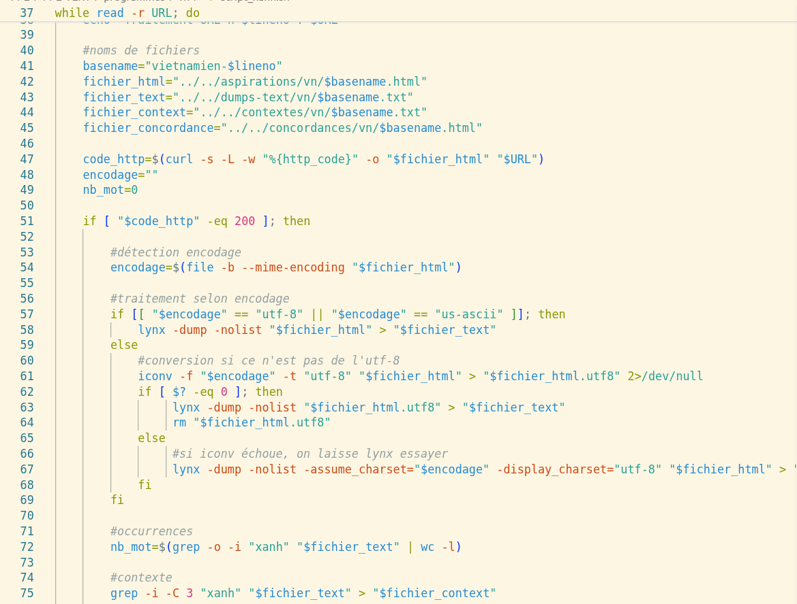
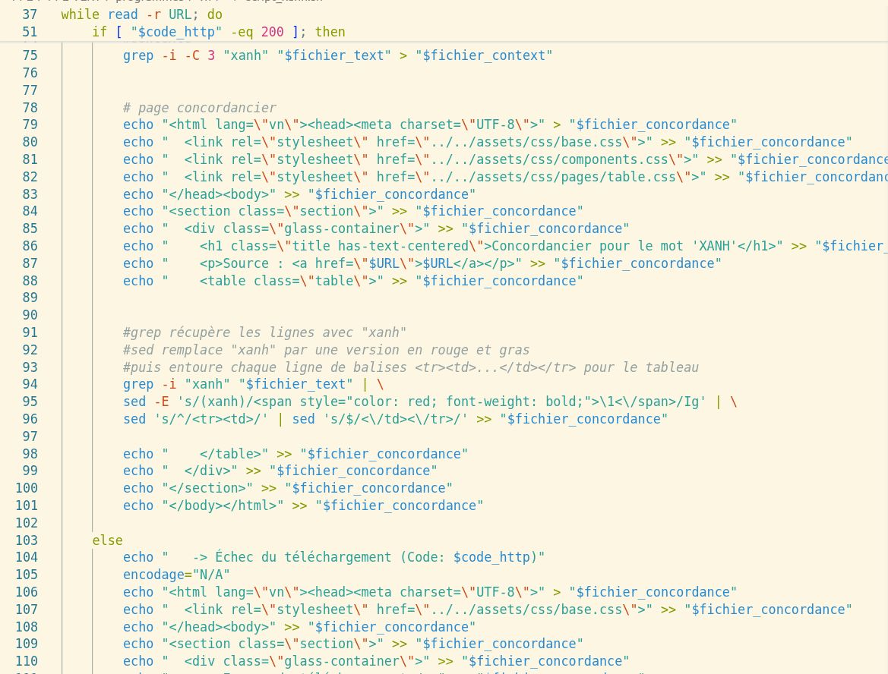
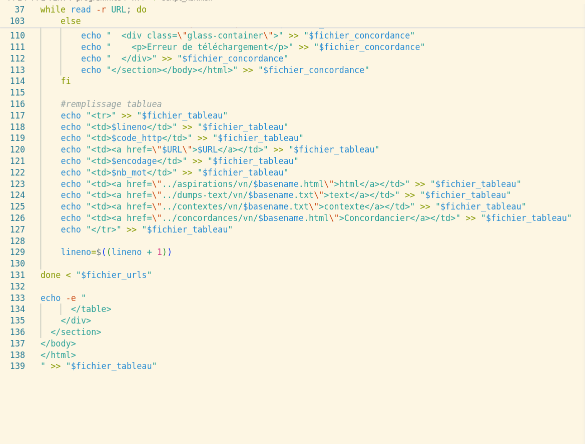
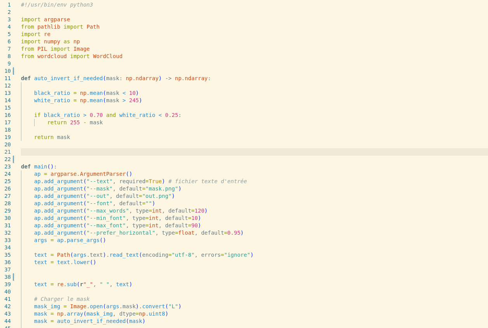
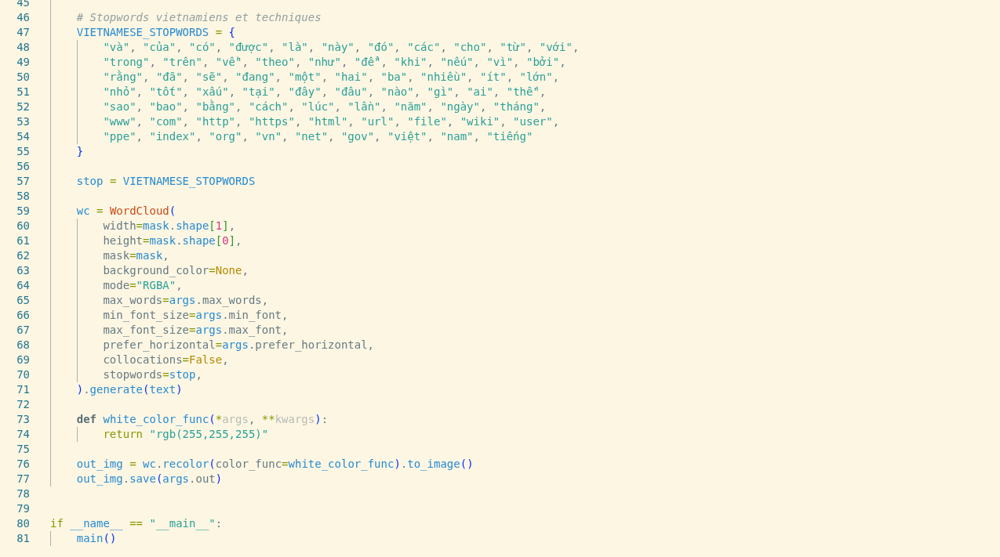
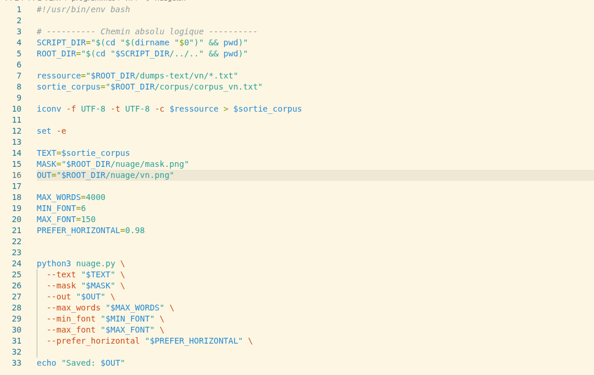
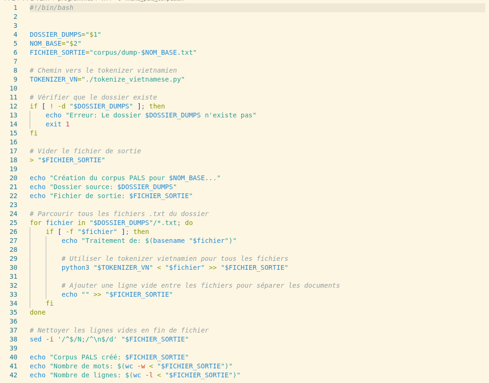
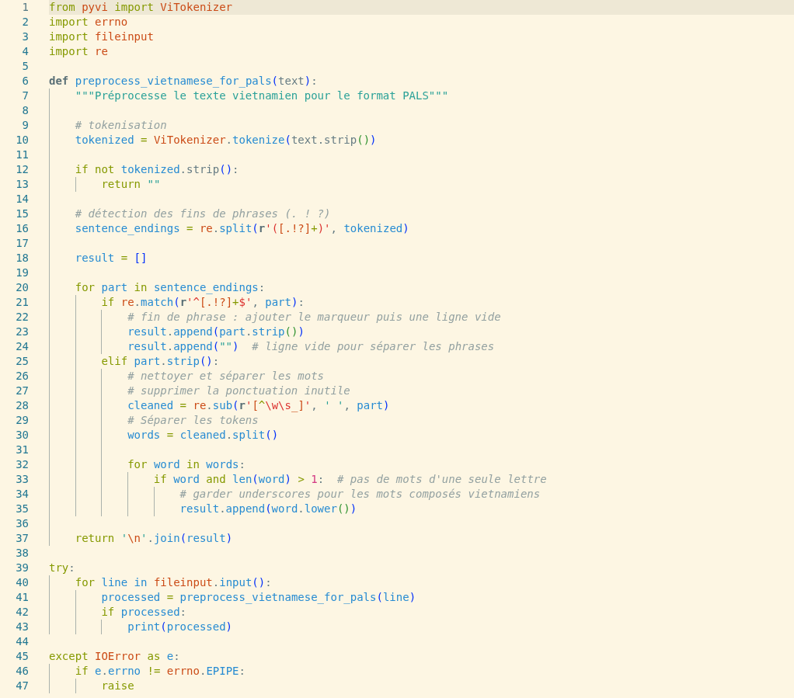

Explication : Script bash qui produit un tableau récapitulatif de l’analyse lexicale du mot « xanh » en vietnamien à partir d’une liste d’URL. Pour chaque URL, le script télécharge la page web, extrait le texte brut, compte les occurrences du mot « xanh », génère des contextes et un concordancier, le tout regroupé dans un tableau HTML.


Explication : Script Python qui génère un nuage de mots à partir d’un fichier

Explication : Script bash qui automatise la génération de nuages de mots Il appelle le script Python de génération de nuages de mots en lui f ournissant les fichiers texte d’entrée et les masques appropriés, produisant ainsi des visualisations pour chaque fichier.

Explication : Script bash qui crée un corpus au format PALS à partir d’un dossier de fichiers texte. Il utilise un tokenizer vietnamien pour segmenter le texte en mots, puis concatène les fichiers segmentés en un seul fichier de sortie.

Explication : Script Python qui segmente le texte vietnamien en mots en utilisant la bibliothèque PyVi. Il lit un fichier texte en entrée, applique la segmentation, puis écrit le texte segmenté dans un fichier de sortie.